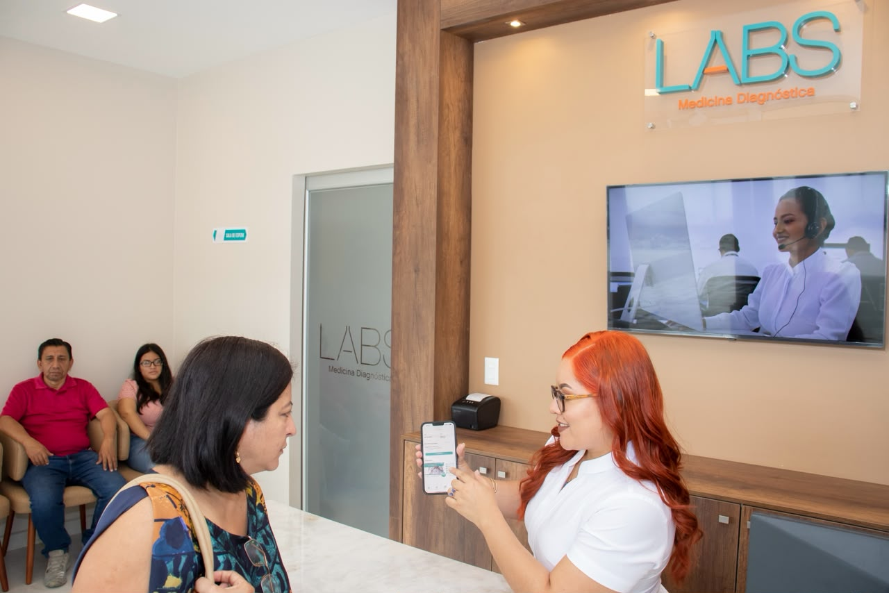

Alcance
Proceso de análisis clínico en sus etapas pre-analítico, analítico y post analítico en hematología, coagulación, química clínica, hormonas, uroanálisis y parasitología.
Su laboratorio de confianza.

HUMANLABS MEDICINA DIAGNÓSTICA se establece con el fin de brindar el mejor y más completo servicio de exámenes de laboratorio a los ciudadanos.
Misión: Somos un laboratorio que cuenta con tecnología para la toma y procesamiento de muestras. Otorgamos servicios de análisis y diagnósticos clínicos confiables, oportunos con altos niveles de ética y calidad.
Visión: Ampliar la cartera de exámenes clínicos para ofrecer un servicio más completo y llegar a ser un laboratorio referente a nivel nacional con presencia en puntos estratégicos.
Proceso de análisis clínico en sus etapas pre-analítico, analítico y post analítico en hematología, coagulación, química clínica, hormonas, uroanálisis y parasitología.
Trabajamos con calidad, calidez, puntualidad y rigurosas normas de confidencialidad para entregar información clínicamente útil.
Estamos comprometidos con el cumplimiento de los requisitos de nuestras partes interesadas mediante la mejora continua y el cumplimiento de nuestros objetivos.